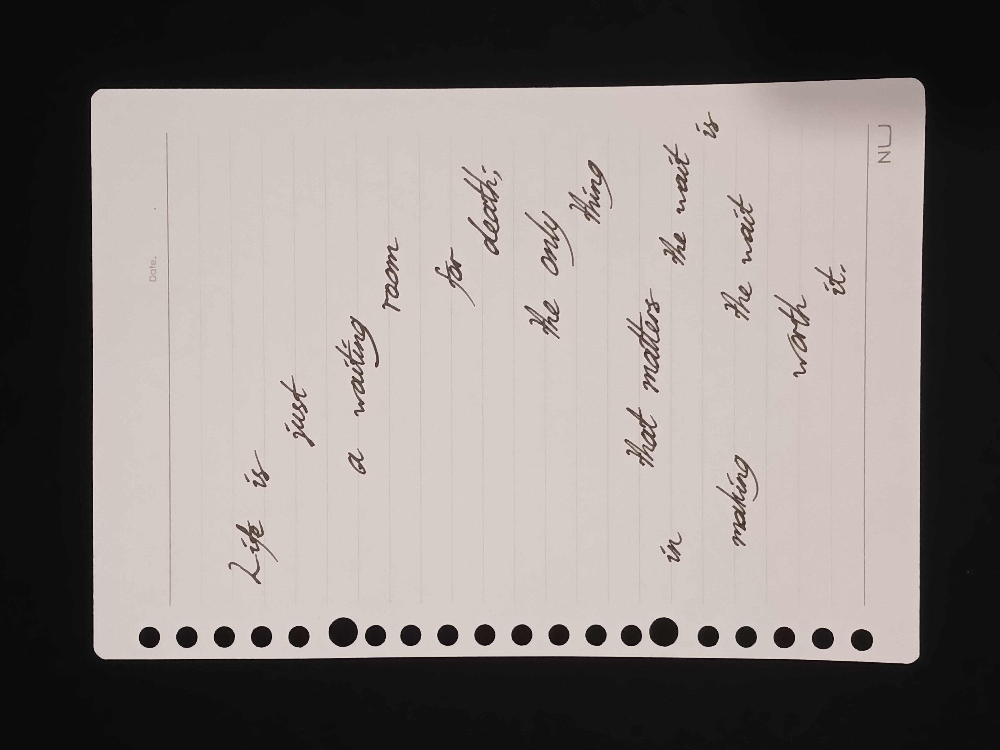
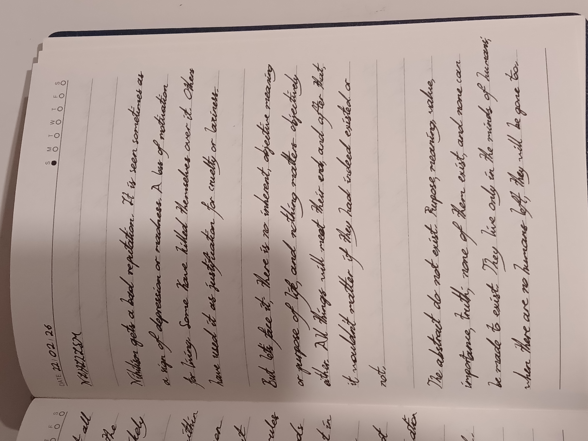
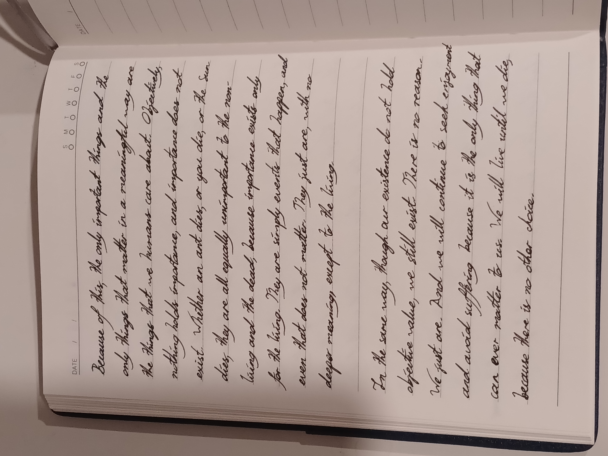

Nihilism

Welcome to Thoughts of a Human. On this website, I will share some of my observations and beliefs about life.
You can use the page navigation at the top of the head to navigate between pages, or the section navigation below to navigate between sections.
(Tip: press '0' to see a list of hotkeys and their actions.)
And here's a link to something I think you should see. Did you get rickrolled?
Nihilism
Nihilism gets a bad reputation. It is seen sometimes as a sign of depression or madness. A loss of motivation for living. Some have killed themselves over it. Others have used it as justification for cruelty or laziness.
But let's face it; there is no inherent, objective meaning or purpose of life, and nothing matters objectively either. All things will meet their end, and after that, it wouldn't matter if they had indeed existed or not.
The abstract do not exist. Purpose, meaning, value, importance, truth; none of them exist, and none can be made to exist. They live only in the minds of humans; when there are no humans left, they will be gone too.
Because of this, the only important things and the only things that matter in a meaningful way are the things that we humans care about. Objectively, nothing holds importance, and importance does not exist. Whether an ant dies, or you die, or the Sun dies, they are all equally unimportant to the non-living and the dead, because importance exists only for the living. They are simply events that happen, and even that does not matter. They just are, with no deeper meaning, except to the living.
In the same way, though our existence does not hold objective value, we still exist. There is no reason. We just are. And we will continue to seek enjoyment and avoid suffering because it is the only thing that can ever matter to us. We will live until we die, because there is no other choice.

Gallery

